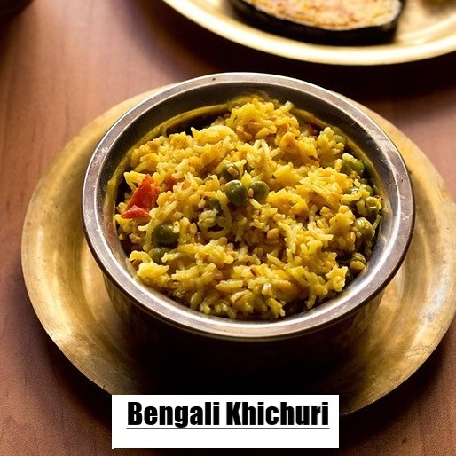
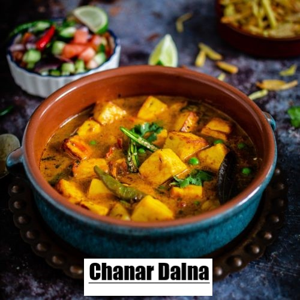
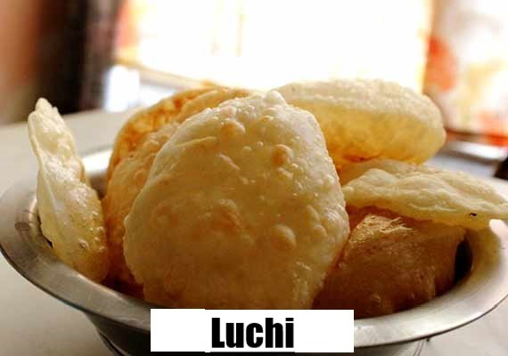
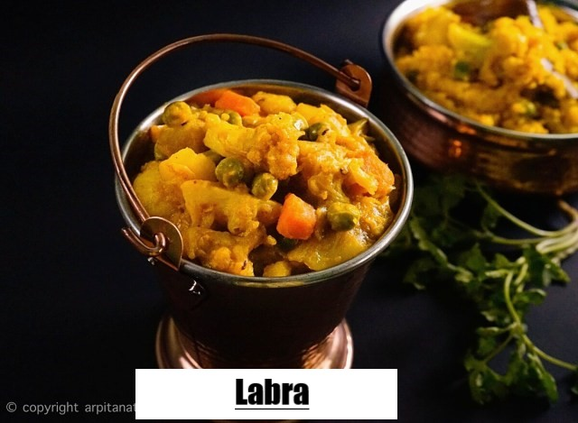

×
Info! Recipe details are directly from our kitchen or from our Moms' recipe notes.
Cooking videos provided here are from internet. That's why, they can vary a little bit.
We apologize! You can try any of them or customize your dish in your own way. Good luck!!

About
An interesting delicacy for beautiful rainy days.Ingredients
For Bengali Khichuri(Bengali Hotchpotch)
- 1 cup rice
- 2 tbsp split Bengal gram (chickpea)
- 2 tbsp skinned green gram or yellow moong dal(mung bean)
- 2 tbsp split green gram or green moong dal(mung bean)
- 2 tbsp pigeon pea or arhar dal
- 2 tbsp pink lentil or masoor dal
- 1/2 cup finely chopped onion
- 1/2 cup potatoes, cut into cubes
- 1/2 cup capsicum, cut into cubes
- 1/2 cup tomatoes, cut into cube
- 1/2 tsp garlic paste
- 1-2 green chillies
- 2 tbsp oil
- 1 tbsp ghee(clarified butter)
- 1/2 tsp mustard seeds
- 1/2 tsp cumin seeds
- 2 cloves
- 3 dry red chillies
- 2 bay leaves
- A pinch of asafoetida or Hing
- 1/2 tsp turmeric powder
- 1 tsp red
- chilli powder
- 1/2 tsp coriander powder
- 1/4 tsp garam masala powder
- Salt to taste
- 4-5 cup water
- Chopped coriander leaves
- 1/2 teaspoon mint leaves
- salt as required
- 2 tablespoon refined oil
- 3 green cardamom
- 2 cloves
- 2 onion
- teaspoon turmeric
- 1 tablespoon garlic paste
- 1 cup hung curd
- 2 tablespoon coriander leaves
- water as required
- 1 tablespoon ghee
- 600 gm chicken
- 1 tablespoon garam masala powder
- 1 dash saffron
- 1 tablespoon bay leaf
- 1 black cardamom
- 1 teaspoon cumin seeds
- 4 green chillies
- 1 tablespoon ginger paste
- 1 teaspoon red chilli powder
- 1/2 tablespoon ginger
- 2 drops kewra(is an essential oil distilled from the male flower of the fragrant screwpine)
- 1 tablespoon rose water
- Garam Masala(Cinnamon,mace,peppercons,coriander seeds,cumin seeds and cardamom pods are toasted in a pan to release their aromatic flavours, then ground to a powder)
Direction
Hotchpotch Processing
Related Video
Step 2:. Heat the ghee and oil in a pan. Add the mustard seeds and cumin seeds when oil is medium hot. When seeds start to splutter add bay leaves, dry red chillies and cloves. Add onions, saute till the onions are transparent. Add garlic paste and saute till the raw aroma goes away. Add potatoes and capsicum, saute for 2 minutes. Add tomatoes and mix well.
Step 3:Add all the spices and mix well. Add drained rice and the other grains. Mix well. Add 4-5 cups of water. Add salt and green chillies.
Step 4: Cover and cook till done. Garnish the Khichuri with fried onion and coriander leaves. Serve hot with a dollop of ghee.

About
Dum Aloo (also spelled as Dam Aloo) or Alu Dum is a potato based dish, it is a part of the traditional Kashmiri Pandit cuisine, from the Kashmir Valley, in the Indian state of Jammu and Kashmir. The potatoes, usually smaller ones, are first deep fried, then cooked slowly at low flame in a gravy with spices. Dum Aloo is a popular recipe cooked throughout India. In Bengal, it is a specialty dish eaten mostly with Luchi and is known as "Aloor dum".Ingredients
For NIRAMISH ALOO DUM (Veg Potato Curry)
- 700 g new baby potatoes (notun alu)
- 50 g peas (blanched)
- 30 g mustard oil
- 2 pcs dried red chillies
- 2 pcs bay leaves
- 3 pcs cloves
- 2 pcs cardamom
- 1 pc cinnamon
- 1/2 tsp cumin seeds
- 1/4 tsp hing (asafoetida)
- 1/2 tsp turmeric
- 1/2 tsp red chilli powder
- 1 tsp cumin powder
- 11/2 tsp coriander powder
- 15 g ginger paste
- 6 g green chilli paste
- 50 g yoghurt
- 20 g tomato ketchup
- 20 g cashewnuts (ground)
- 45 g total salt
- 18 g sugar
- 1/4 tsp bengali garam masala powder(Cinnamon,mace,peppercons,coriander seeds,cumin seeds and cardamom pods are toasted in a pan to release their aromatic flavours, then ground to a powder)
- 5 g ghee(clarified butter)
- 400 g hot water (for the gravy)
Direction
Processing
Related Video
Step 2: Once the potatoes are tender, drain the water and peel them immediately. Coat with 10 g of salt while the potatoes are still hot. This will help in further absorption of salt.
Step 3: Before you begin make a paste of cumin powder, coriander powder, ginger paste, and 25 g water, and keep at the ready.
Step 4: Heat 30 g mustard oil in a pan. Temper it with dried red chillies, bay leaves, cloves, cardamom, cinnamon, cumin seeds, and hing. Allow the hing to fry for about 10 seconds before adding turmeric powder and red chilli powder. Fry for 20 seconds. We would normally add turmeric and red chilli to the paste we made earlier, but for this dish, frying them directly in oil will lend the gravy a rich red colour. However, dry spices are prone to getting burnt in oil, so be very careful and keep the heat low.
Step 5: Next, stir in the spice paste. Cook until the smell of raw spices is gone and they have started to release oil. This should take about 5 minutes. Meanwhile, beat the yoghurt until it is lump-free. Add it to the pan, stirring vigorously to prevent it from splitting. Cook off the raw yoghurt for a couple of minutes before stirring in the ketchup.
Step 6: Now add the boiled and salted potatoes, and fold them in. Sauté them with the spices for about 4 minutes. We’ve chosen not to fry the potatoes before adding them, as boiling them directly in the curry leads to juicier potatoes.
Step 7: Add the remaining salt (5 g) and all of the sugar to the pan, along with 400 g of hot water. This will form the gravy. Cover and allow the potatoes to simmer in the curry for about 20 minutes until the gravy has reduced and the potatoes are juicy and tender. Stir regularly so the bottom doesn’t catch.
Step 8: Once the gravy has reduced, add the ground cashew and blanched peas. Cook for a minute before garnishing with ghee and garam masala. Turn off heat, cover, and allow alu’r dom to rest for 2 minutes before serving.

About
There are two types of Polaos which we normally have in Bengal – yellow Basanti Pulao and the white Pulao. While discussing this, one of my friends from Odisha shared this beautiful information – Misti pulao of Bengal is commonly known as ” KANIKA”. Kanika is a fragrantly sweet pulao that is traditionally prepared in Orissa. It finds a place of pride among the ‘chappan bhog’ or 56 items that form part of Lord Jagannath’s menu. Before the fried rice and biryani became popular in Orissa, Kanika used to be served at all wedding feasts, picnics and family gatherings. It is stronger in flavor than a traditional pulao and also is a little sweet. Usually prepared with arua chaula ‘raw rice’ (Ambebhog/GovindBhog), one can replace it by any other aromatic rice (Basmati for example).Ingredients
For BASANTI PULAO(SWEET YELLOW AROMATIC RICE)
- 1.5 cup basmati rice, washed and soaked in water for 15 minutes
- 4 tbsp ghee or clarified butter(clarified Butter)
- 1.5 tsp turmeric powder
- 5 tsp sugar
- 1.5 tsp ginger paste
- Salt to taste
- 3 tbsp raisins
- 1/4 cup cashews
- 4 cloves
- 1-inch cinnamon stick
- 2 small bay leaves
- 4 green cardamoms
- 3 cups water
Direction
Processing
Related Video
Step 1:In a bowl, add soaked rice, pour 2 tbsp ghee, turmeric powder, ginger paste, sugar and salt. Combine everything together. Make sure the rice is well coated. Keep it aside to marinate for 15 minutes.
Step 2: To the same pot, add cloves, cinnamon stick, bay leaves and green cardamoms. Cook for a minute until they become fragrant.
Step 3: Then add the rice mixture to the pot. Stir gently to combine everything together. Cook the rice, stirring frequently, for about 2 minutes.
Step 4: Pour water and bring it to a boil over a high flame.
Step 5: Cover it with a lid and lower the flame to medium. Cook for about 10-15 minutes until all the water has evaporated and the rice is fully cooked.
Step 6: Turn the flame off. Add the fried cashews and raisins. Mix everything gently.

About
A veg banana chop can make you forget all the non-veg chops!Ingredients
For Kacha Kolar Koftar Dalna(Raw Banana Chop Curry)
- 2 raw banana
- 2 small potato
- 2 green chillies
- to taste Salt
- 2 tsp sugar
- 2 tsp cumin seeds
- 1 bay leaf
- 3 tsp Turmeric powder
- 1 tbs red chilli powder
- 2 tsp roasted cumin powder
- 2 tsp Coriander powder
- Cinnamon 1 stick
- Fennel seeds 1 tsp
- Curdamom 4 pcs
- 1/4 tsp bengali garam masala powder(Cinnamon,mace,peppercons,coriander seeds,cumin seeds and cardamom pods are toasted in a pan to release their aromatic flavours, then ground to a powder)
- Cumin paste 1 tsp
- Ginger paste 1 tsp
- Corn flour 2 tsp
- Ghee (clarified butter) 8 tsp
- Dry chilli & Green Chilli
Direction
Processing of Kofta
Related Video
Processing of Curry
Step 1:Cut the rest potatoes in a cube shape. In a pan take Soyabean oil, fry the potatoes and separate them in a bowl.Step 2:. Heat the same oil with all dry spices (without garam masala), fry ,then give ginger & cumin paste, saute until the spice release oil. Give the rest cube cut potatoes and fry for 2 min.
Step 3:Give a splash of hot water, adjust sugar and salt, wait until the potatoes are 80% cooked, then give the koftas and green chilli in the curry , cook for 5-10 minute.
Step 4: Turn off the gas , mix ghee and garam masala in it and cover the pot with lid.

About
A highly protien-filled veg recipe !Ingredients
For Chanar Dalna(cottage cheese curry)
- 2 small potato(cube cut)
- 4 green chillies
- to taste Salt
- 2 tsp sugar
- 2 tsp cumin seeds
- 1 bay leaf
- 3 tsp Turmeric powder
- 1 tbs red chilli powder
- 2 tsp roasted cumin powder
- 2 tsp Coriander powder
- 1 tsp garam masala
- Cinnamon 1 stick
- Fennel seeds 1 tsp
- Curdamom 4 pcs
- 1/4 tsp bengali garam masala powder(Cinnamon,mace,peppercons,coriander seeds,cumin seeds and cardamom pods are toasted in a pan to release their aromatic flavours, then ground to a powder)
- Cumin paste 1 sp
- Ginger paste 1 tsp
- Ghee (clarified butter)
- Dry chilli & Green Chilli
- 1 litre milk
- 2 tsp vinegar
- 1 chopped tomato
Direction
Processing Of Chana
Related Video
Processing Of Curry
Step 1:In a pan take Soyabean oil, fry the potatoes and separate them in a bowl. Heat the same oil with all dry spices (without garam masala), fry ,then give ginger & cumin paste, saute until the spice release oil. Give the rest cube cut potatoes and tomato and fry for 2 min.Step 2:Give a splash of hot water, adjust sugar and salt, wait until the potatoes are 80% cooked, then give the chana cubes and green chilli in the curry , cook for 5-10 minute.
Step 3: turn off the gas , mix ghee and garam masala in it and cover the pot with lid.

About
A refreshing pulse recipe for summerIngredients
For Mung Dal(Yellow Mung Bean Soup)
- 100 g moong dal
- 500 g water
- 10 g soyabean oil
- 1 pc dried red chilli & 2 oc green chilli
- 1 pc bay leaf
- 1 pc green chilli
- 1/4 tsp cumin seeds
- 1 tsp cumin paste
- 8 g salt
- 10 g sugar
- tsp turmeric
- 8 g ghee(clarified butter)
- Fennel seed 1 pinch
Direction
Processing
Related Video
Step 2: In a pan, take soyabean oil,heat the oil with spices, give the cumin paste, saute until it release oil,give sugar and salt to taste ,then give the boiled bean with water, boil,give green chilli .
Step 3: At last give 1 tsp ghee in it. And turn off the gas.

About
A traditional bengali breadIngredients
For Luchi(Bengali puffy bread)
- 3 cups all purpose flour
- 1 cup wheat flour (optl)
- Salt
- 1 tsp sugar
- 2 tbsp ghee +1 tbs oil
- Hot water to knead the dough
Direction
Processing
Related Video
Step 2:Now add hot water and knead well for 8 to 10 minutes.Kneading will helps the gluten to develop and this helps luchis to puff up.
Step 3:Cover and rest for 30 minutes.Resting is important as it helps to relax and lose some of it’s elastisity,so when we roll out the luchis they retain it’s shape and they don’t spring back. (that’s a great tip when working with all purpose flour) Here you can see after and before resting.(it holds the shape)
Step 4: Divide the balls into equal portions and roll it out into small circles
Step 5: Heat oil in a kadai and deep fry it until light golden.Press with back of a ladle to puff it up.
Step 6: Serve it.
About
A healthy and tasty vegetarian recipe!Ingredients
For Shukto(Bengali Appetizer with Stewed vegetable)
- Papaya(1/2 cup)
- Blanched green Bananas(1/2 cup)
- Eggplants(1/2 cup)
- Bitter gourd(1/2 cup)
- Ridged gourd(1/2 cup)
- Horseradish(1/2 cup)
- Mustard seed 1 tsp
- Mustard seed paste 1 tsp
- Milk 1/2 cup
- Sugar
- Salt
- Ginger paste tsp
- Ghee(clarified butter)
- Radhuni(trachyspermum roxyburghianum)
Direction
Processing
Related Video
Step 2:After 10 minute give that bitter gourd and salt and sugar to taste. Slow cook for some time until the vegetables are 50% cooked.
Step 3: Then give half cup milk & half cup water. If the vegetables are 90% cooked give that ginger paste and mustard paste. After 5 minutes, give 1 tsp of ghee in that pan and cover the pot with lid and turn off the gas.

About
A vegetarian recipe for festivals!Ingredients
For Labra( Bengali Traditional Vegetable Curry)
- 2 Potatoes (cut, lengthwise)
- 2 Brinjals/Eggplants, chopped
- 2 Radish, chopped
- 2 Cups Cabbage, chopped
- 1small Cauliflower (cut into pieces)
- 1 small Pumpkin (cut into pieces)
- 1/2 tsp Panch Phoran(Cumin: 2 tsp,Nigella: 1/2 tsp,Fenugreek: 1 tsp,Carom seeds/Radhuni: 2 tsp,Mustard seeds: 1 ts,(Fennel seed))
- 1/2 tsp Coriander seed
- 1 tsp Ginger paste
- 1 tsp Cumin paste
- 1 tsp Coriander powder
- Bay leaf 3 pcs
- 1 tsp Dry chilli powder
- 3-4 Green chilies (slit)
- Soyabean oil
- 1/2 tsp Turmeric powder
- Ghee(Clarified Butter)
Direction
Processing
Related Video
Step 2:. Heat the oil with panch Phoron and then give coriander seed, and dry chilli, fry, then give ginger, cumin paste and coriander powder, saute until the spice release oil , then give salt and sugar to taste and give the vegetables in the pan, slow cook, boil the vegetables well, give green chilli and stir well then give 1 tsp ghee and turn off the gas and cover the pot.

About
Bengali Style Fried RiceIngredients
For Bengali Fried Rice(Sabji Polao)
- 300 g basmati rice
- 100 g carrots
- 100 g beans
- 50 g peas
- 4 pcs bay leaves
- 1 stick cinnamon
- >4 pcs cardamom
- 4 pcs cloves
- 25 g cashew nuts
- >25 g raisins
- 6 pcs green chillies
- >1/2 tsp peppercorns
- 1/2 tsp garam masala powder(Cinnamon,mace,peppercons,coriander seeds,cumin seeds and cardamom pods are toasted in a pan to release their aromatic flavours, then ground to a powder)
- 16 g salt
- 26 g sugar
- 10 g ghee
- 15 g vegetable oil
Direction
Processing
Related Video
Dice the carrots in 1-cm cubes. Chop the beans on the bias (in 1-cm sections) for a nice trapezoid shape. Shell the peas. Slit the green chillies.
Freshly grind the peppercorns so that you have about 1/2 tsp pepper. Mix it with the garam masala powder, salt, and sugar. Combining the spices and seasoning before adding them to the rice will ensure even distribution.
Step 2:Set a pan on medium heat and add vegetable oil and ghee to it. Once hot, temper the oil with the bay leaves, cinnamon, cardamom, cloves, and about five peppercorns.
Add the cashewnuts and fry them until they are lightly coloured. We don’t want them completely golden at this stage as they will fry throughout the cooking process.
Turn up the heat and add the carrots. Stir-fry them for 2 minutes before adding the beans. Fry the beans for 2 minutes and then add the peas and raisins. Keeping the heat high ensures that the veggies retain their vibrant colours and don’t lose crunch.
Step 3: Turn off the heat and layer half the cooked rice over the vegetables. Sprinkle half the premixed seasoning. Top off with the remaining rice and seasoning. Also add the green chillies.
To mix the rice thoroughly while ensuring minimal breakage of the grains, use the fold and rotate motion as shown in the video. Do this until everything is well combined.
Cover the pan and set it over the lowest heat setting for about 20 minutes and steam until the rice has cooked completely. Check once or twice to see that the rice isn’t sticking to the bottom of the pan. Rest for at least 10 minutes before serving.